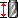

<table valign=middle><tr><td height=24 width=24></td><td><div id="restMaterialShoulderLength"><h3 id="restMaterialShoulderLength">Длина плеча инструмента для остаточного материала</h3>
</td></tr></table>
</div>